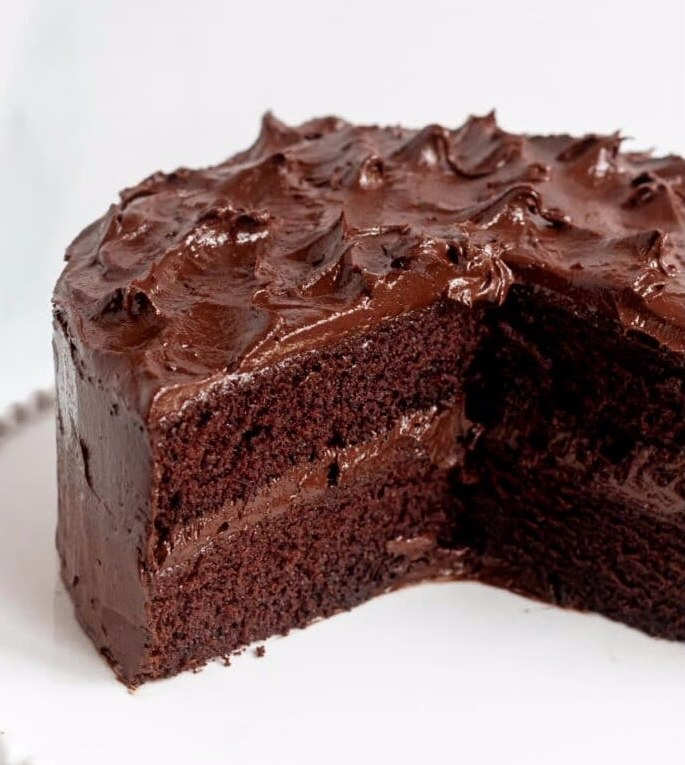

CHOCOLATE CAKE
Credit: Alison Richardson
Ingredients
 Ingredients
Ingredients

| Base | 2x | 3x | |
|---|---|---|---|
| Water | 1 cup | 2 cups | 3 cups |
| Caster sugar | 1½ cups | 3 cups | 4½ cups |
| Butter | 125 g | 250 g | 375 g |
| Cocoa powder | 2 tbsp | 4 tbsp | 6 tbsp |
| Bicarbonate of soda | ½ tsp | 1 tsp | 1½ tsp |
| Self-raising flour | 1½ cups | 3 cups | 4½ cups |
| Eggs | 2 | 4 | 6 |

Method
- Grease deep 19 cm square cake pan, line base with baking paper.
- Combine water, sugar, butter, cocoa and soda in a medium pan; stir over heat, without boiling, until sugar dissolves.
- Bring to the boil, simmer uncovered for 5 minutes. Transfer mixture to a large bowl and cool for 10 minutes.
- Add flour and eggs to the mixture; beat with electric mixer on low speed until smooth.
- Pour mixture into prepared pan. Bake in a moderate oven about 40 minutes (2x: 45 min in a large square tin; 3x: in extra-large tin).
- Stand cake in pan 10 minutes, then turn onto a wire rack to cool.
- Top cold cake with 1 quantity Fluffy Cocoa Frosting.